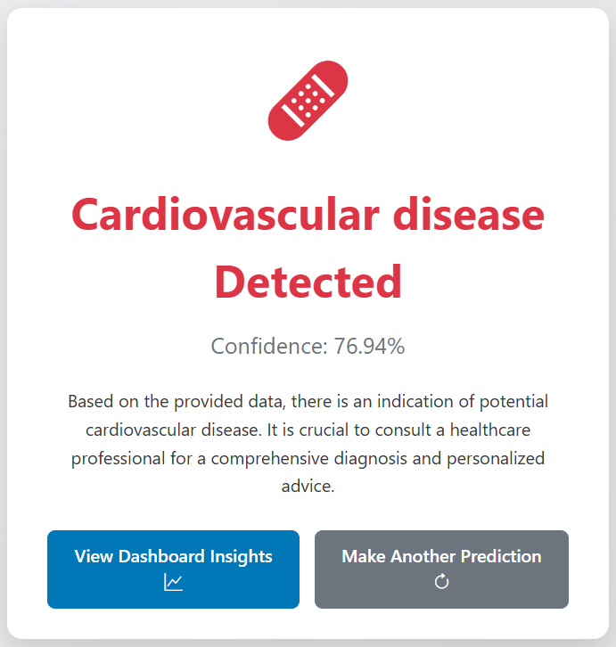
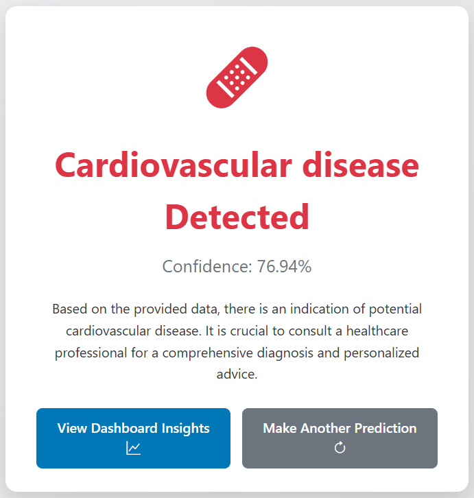
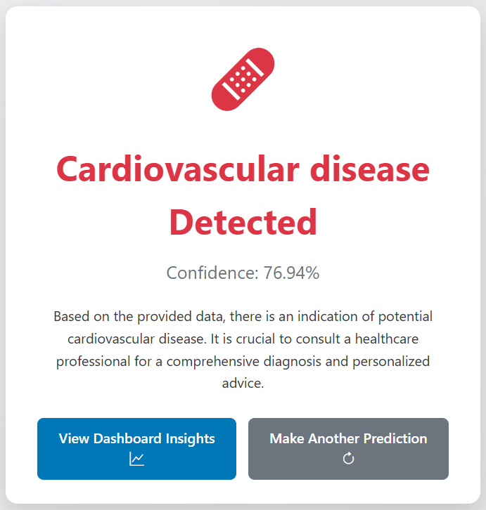

Skilled in Python, SQL, Machine Learning, and Data Visualization with expertise in EDA, feature engineering, and predictive modeling. Passionate about transforming complex data into actionable insights using advanced analytics and interactive dashboards (Tableau, Power BI).
×
 

HeartSmart AI
Technologies Used
About Project
- Developed a machine learning model to predict heart disease risk with 85% accuracy.
- Utilized Random Forest and Logistic Regression algorithms for classification.
- Performed extensive EDA to identify key risk factors like age, cholesterol, and blood pressure.
- Built an interactive web interface using Streamlit for real-time user predictions.
Project Output
